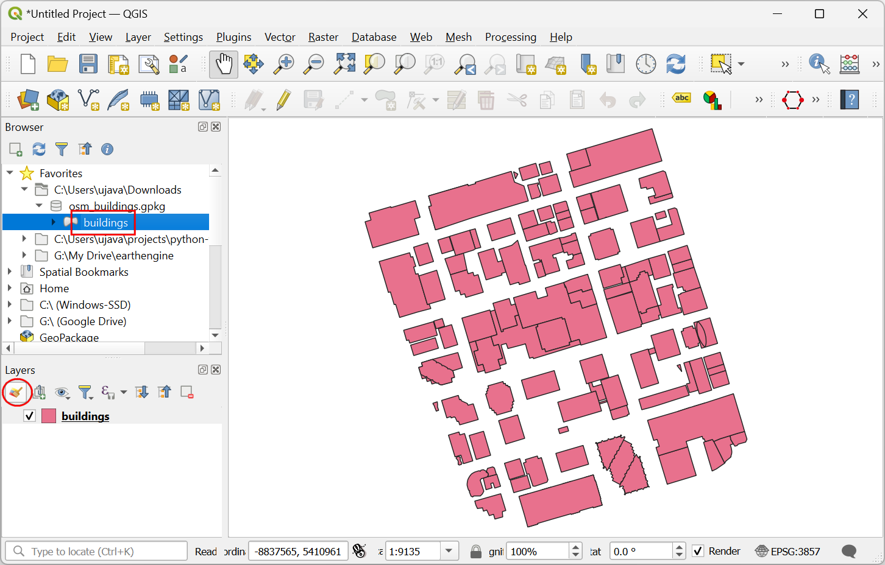

Verarbeitungsroutinen mit Python ausführen (QGIS3)¶
Die QGIS-Verarbeitungswerkzeuge enthalten eine ständig wachsende Sammlung an Geoverarbeitungswerkzeugen. Die Verarbeitungswerkzeuge besitzen eine einfache Oberfläche zur Stapelverarbeitung von vielen Eingangsdaten. Siehe Stapelverarbeitung mit dem Processing Framework (QGIS3). Es gibt aber Fälle in denen man die Stapelverarbeitung durch eigene Anpassungen erweitern möchte. Alle Verarbeitungsalgorithmen können auch über die Python API gestartet werden. Diese Anleitung zeigt, wie man einen angepassten Verarbeitungsalgorithmus mit Hilfe der Python Konsole startet. Dazu sind nur einige wenige Zeilen Programmiercode erforderlich. Unter Mit der Pythonprogrammierung loslegen (QGIS3) kann man sich mit den Grundlagen der Python Scripting Umgebung in QGIS vertraut machen.
Überblick über die Aufgabe¶
Wie werden 12 Layer mit Rastergittern der Monatsniederschläge verwenden, um den mittleren monatlichen Niederschlag je Postleitzahlengebiet im Gebiet um Seattle zu bestimmen.
Weitere Fähigkeiten die wir erlernen¶
Access all layer(Raster and vector) from Python console and print their names.
Merge diffrent layer into single layer using Python script.
Beschaffung der Daten¶
The PRISM Climate Group sammelt klimatische Daten und stellte historische und aktuelle Daten für die USA und angrenzende Gebiete bereit. Gehe zum Tab Recent Years und lade die monatlichen Niederschlagsdaten für das Jahr 2017 im Format BIL herunter.

City of Seattle Open Data portal stellt Daten der Stadt als Opendata zur Verfügung. Suche folgende Datei und lade sie im shape-Format herunter: Zip Codes.
Der Einfachheit halber können wir beide Datensätze unter folgenden links herunterladen:
PRISM_ppt_stable_4kmM3_2017_all_bil.zip
Datenquelle [PRISM] [CITYOFSEATTLE]
Arbeitsablauf¶
Locate the
PRISM_ppt_stable_4kmM3_2017_all_bil.zipfolder in the QGIS Browser and expand it. The folder contains 12 individual layers for each month. Hold the Ctrl key and select the.bilfiles for all 12 months. Once selected, drag them to the canvas.

Bemerkung
Die Daten liegen in folgendem Format vor: BIL format. Zu jedem Layer gehören mehrere Dateien. Die Datei mit der Endung .bil enthält die aktuellen Daten, die Datei mit der Endung .hdr beschreibt die Datenstruktur und die Datei mit der Endung .prj enthält die Information zur Projektion des Koordinatensystems.
A Select Transformation of PRISM_ppt_stable_4kmM3_2017_all_bil dialog box will appear, leave the selection to default and click OK.

Next, locate the
Zip_Codes.zipfolder and expand it. Drag theZip_Codes.shpfile to the canvas.

Wir klicken mit der rechten Maustaste auf den Layer
Zip_Codesund wählen Auf den Layer zoomen. Jetzt sehen wir die Polygone der Postleitzahlen für die Stadt Seattle und Umgebung.

Gehe zu .

The algorithm to sample a raster layer using vector polygons is known as
Zonal statistics. Search for the algorithm in the Processing Toolbox. Select the algorithm and hover your mouse over it. You will see a tooltip with the text Algorithm ID: ‚native:zonalstatisticsfb‘. Note this id which will be needed to call this algorithm via the Python API. Double-click theZonal Statisticsalgorithm to launch it.

We will do a manual test run of the algorithm for a single layer. This is a useful way to check if the algorithm behaves as expected and also an easy way to find out how to pass on relevant parameters to the algorithm when using it via Python. In the Zonal Statistics dialog, select
Zip_Codesas the Input layerPRISM_ppt_stable_4kmM3_201701_bilas the Raster Layer and, leave other parameters to default. Click the … button next to Statistics to calculate and select onlyMean, next click the … button next to Zonal Statistics and save the layer asjanuary_mean.gpkgClick Run .

Nachdem die Berechnung abgeschlossen wurde, gehen wir zum Log tab. Wir machen uns eine Notiz der Eingabeparameter die an den Algorithmus übergeben wurden und klicken auf Schließen.

Now a new layer
january_meanwill be added to the canvas. Let’s check the results, right-click on the layer and select Open Attribute Table. This particular algorithm modifies the input zone layer in-place and adds a new column for every statistic that was selected. As we had selected onlyMeanvalue, a new column named_meanis added to the table. The_was the default prefix. When we run the algorithm for layers of each month, it will be useful to specify a custom prefix with the month number so we can easily identify the mean values for each month (i.e. 01_mean, 02_mean etc.). Specifying this custom prefix is not possible in the Batch Processing interface of QGIS and if we ran this command using that interface, we would have to manually enter the custom prefix for each layer. If you are working with a large number of layers, this can be very cumbersome. Hence, we can add this custom logic using the Python API and run the algorithm in a for-loop for each layer.

Zurück im QGIS Hauptfenster gehen wir zu .

Click on the show editor button. This will open the python editor where a bunch of python code can be written and executed with a single click of a button.

To run the processing algorithm via Python, we need to access names of all the layers. Enter the following code in the editor and click on the Play button. You will see the names of all layers printed in the console.
root = QgsProject.instance().layerTreeRoot() for layer in root.children(): print(layer.name())
Now, let’s calculate the
Meanfor one month and create an output layer. In the below code break is used to exit the loop after the first execution, by this we can calculate the mean for January month.
root = QgsProject.instance().layerTreeRoot() input_layer = 'Zip_Codes' result_layer = input_layer unique_field = 'OBJECTID' # Iterate through all raster layers for layer in root.children(): if layer.name().startswith('PRISM'): # Run Zonal Stats algorithm prefix = layer.name()[-6:-4] params = {'INPUT_RASTER': layer.name(), 'RASTER_BAND': 1, 'INPUT': input_layer, 'COLUMN_PREFIX': prefix+'_', 'STATISTICS': [2], 'OUTPUT': 'memory:' } result = processing.run("native:zonalstatisticsfb", params) result_layer = result['OUTPUT'] # Breaking out of loop to demonstrate the zonalstatistics algorithm. break QgsProject.instance().addMapLayer(result_layer)
Bemerkung
You can also run a QGIS Processing algorithm via Python using the processing.runAndLoadResults() function instead of processing.run() as shown above - which will load the result to QGIS canvas directly.
A new layer
outputwill be added to the canvas, right-click on the layer and select Open Attribute Table. 01_mean represents one month mean, likewise the above algorithm will produce 12 new layers if executed without the break.

Now lets add code to merge all the months mean, and create an single output layer from it. Enter the following code to iterate over all raster layers, extract the custom prefix and run the
native:joinattributestablealgorithm to create an single layer containing all months mean.
root = QgsProject.instance().layerTreeRoot() input_layer = 'Zip_Codes' result_layer = input_layer unique_field = 'OBJECTID' # Iterate through all raster layers for layer in root.children(): if layer.name().startswith('PRISM'): # Run Zonal Stats algorithm prefix = layer.name()[-6:-4] params = {'INPUT_RASTER': layer.name(), 'RASTER_BAND': 1, 'INPUT': input_layer, 'COLUMN_PREFIX': prefix+'_', 'STATISTICS': [2], 'OUTPUT': 'memory:' } result = processing.run("native:zonalstatisticsfb", params) zonalstats = result['OUTPUT'] # Run Join Attributes by Table to join the newly created # column with original layer params = { 'INPUT': result_layer, 'FIELD':unique_field, 'INPUT_2': zonalstats, 'FIELD_2': unique_field, 'FIELDS_TO_COPY': prefix + '_' + 'mean', 'OUTPUT': 'memory:'} result = processing.run("native:joinattributestable", params) # At the end of each iteration, update the result layer to the # newly processed layer, so we keep adding new fields to the same layer result_layer = result['OUTPUT'] QgsProject.instance().addMapLayer(result_layer)
Once the processing finishes, a new layer
outputwill be added to canvas, right-click on the layer and select Open Attribute Table.

Wir sehen 12 neue Spalten mit dem angepassten Prefix, die den mittleren aus den Rasterlayern extrahierten Niederschlag enthalten.